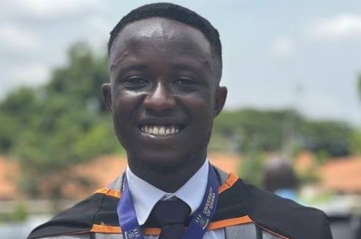

My research explores how crystal structure shapes material properties: from temperature-driven phase transitions in hybrid halide crystals to defects and epitaxial quality in nitride thin films.
I’m pursuing the Erasmus Mundus MSc in Chemical Nanoengineering and am interested in PhD opportunities starting in 2027.
At INTiBS PAN, I grew hybrid halide crystals by slow solvent evaporation and studied them using ATR-FTIR, X-ray diffraction and Raman spectroscopy. Temperature-dependent Raman measurements helped track phase transitions, under the supervision of Prof. Maciej Ptak.
At IM2NP (CNRS), I used Python to analyse reciprocal-space maps collected at ESRF beamline BM02, assessing mosaicity and epitaxial quality in ScAl(Ga)N films. This work was carried out with Prof. Jacopo Remondina and Dr Thomas Cornelius, and has led to a manuscript in preparation.
My earlier work at the University of Ghana explored nanomaterials for environmental and biomedical applications, including superhydrophobic glass coatings, chitosan–zeolite drug carriers, green-synthesised Ag-TiO2 photocatalysts and natural-fibre sorbents for oil-spill clean-up.
Grew hybrid halide crystals and characterised them using ATR-FTIR, XRD and Raman spectroscopy, including temperature-dependent measurements to investigate phase transitions.
Analysed synchrotron reciprocal-space maps from ESRF BM02 to assess mosaicity and epitaxial quality in ScAl(Ga)N films. Prepared a report reviewed by supervisors and intended as a reference for future interns, and presented the findings online to teams in Nice and Marseille.
Led tutorials in Thermodynamics and Refractories for more than 350 undergraduates, contributed to the research behind five publications, and mentored seven undergraduate research interns.
Helped supervise renovation projects at the Ghana School of Law and learned how environmental conditions influence material selection.
Taught mathematics and science at primary-school level.
My presentation at the Chemical NanoEngineering Summer School in Poland in June 2026.
I welcome conversations about research collaborations and PhD opportunities.